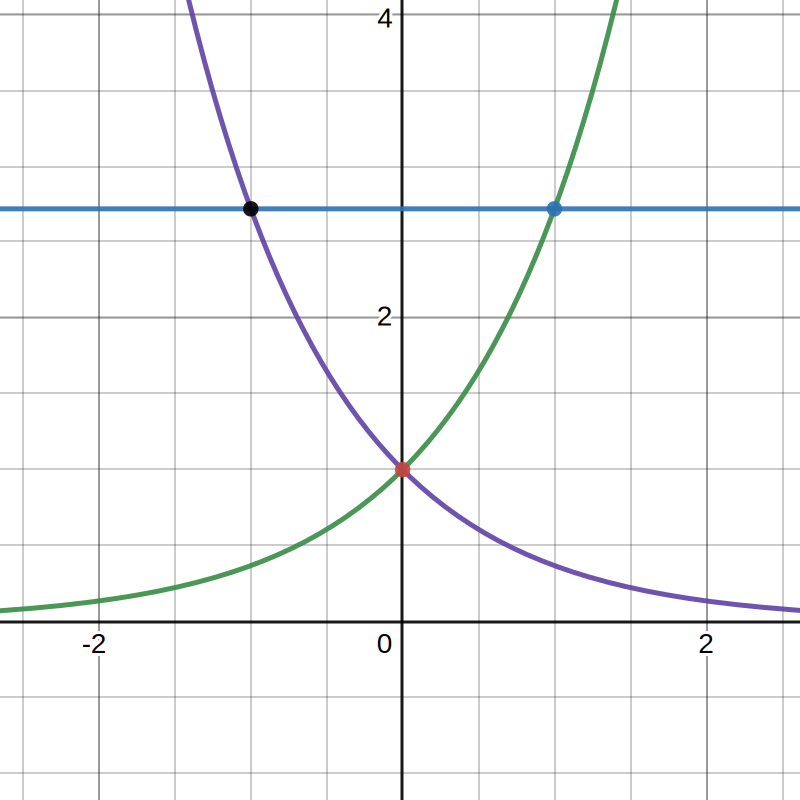
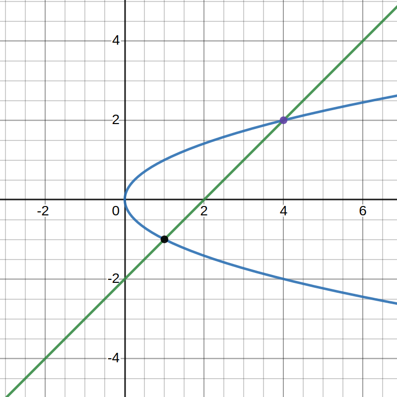

Mos Kullathon
921425216
y=x2x+y=2⟹⟹f(x)=x2g(x)=2−x
Finding intersections of f and g.
x2=2−xx2+x−2=0(x−1)(x+2)=0∴x=−2,1
Since g(x)≥f(x) for x∈[−2,1], the area between the curves is:
∫1−2g(x)−f(x)dx=∫1−2(2−x−x2)dx=[2x−2x2−3x3]1−2=29.
2. Find the area of the region enclosed by y=tanx and the x-axis over the interval [−π/3,π/4].
Since tanx≤0 for x=2πn+π where n∈Z, we find that for values of x∈[−3π,4π]:
tanx≤0,x∈[−3π,0]tanx≥0,x∈[0,4π]
As such, the total area of y=tanx bounded by the x-axis over [−3π,4π] is:
−∫−π/30tanxdx+∫0π/4tanxdx=−[−lncosx]−π/30+[−lncosx]0π/4=23ln2.
x=(y−1)2x=3−yx=2y⟹⟹⟹y=x−1y=3−xy=41x2
x−1≥41x2 for x∈[0,1]. As such the area from x=0 to x=1 is:
∫01(x+1−41x2)dx.
3−x≥41x2 for x∈[1,2]. As such the area from x=1 to x=2 is:
∫12(3−x−41x2)dx.
Therefore, the area A between the three functions from x=0 to x=1 is the sum of the two integrals.
A=∫01(x+1−41x2)dx+∫12(3−x−41x2)dx=[32x3/2+x−12x3]01+[3x−2x2−12x2]12=1219+310−1229=25
(2) Area between y=x2 and y=3x+4.
x2=3x+4x2−3x−4=0(x−4)(x+1)=0∴x=−1,4
y=x2 and y=3x+4 intersects at x=−1 and x=4, and 3x+4≥x2 for all x∈[−1,4]. Therefore,
A=∫−143x+4−x2dx=[23x2+4x−3x3]−14=6125.
(3) Area between y=x3 and y=x2+x.
x3=x2+xx3−x2−x=0∴x=21±25
y=x3 and y=x2+x intersects at x=21−5 and x=21+5.
0≥x3≥x2+x for all x∈[21−5,0] and x2+x≥x3≥0 for all x∈[0,21+5]. Therefore,
A=∫21−50(x3−x2−x)dx+∫021+5(x2+x−x3)dx=[4x4−3x3−2x2]21−50+[3x3+2x2−4x4]021+5=1213.
(12) Area between y=e, y=ex, and y=e−x.
e=ex⟹x=1e=e−x⟹x=−1∴x=±1
|
|  |
e=ex at x=1 and e=e−x at x=−1 |
∴A=∫−10e−e−xdx+∫01e−exdx=[ex+e−x]−10+[ex−ex]01=2
(22) Area between x=−3+y2 and x=y−y2.
−3+y2=y−y22y2−y−3=0∴y=−1,23
|
 |
−3+y2=y−y2 at y=−1 and y=23 |
∴A=∫−13/2y−y2−(−3+y2)dy=∫−13/2−2y2+y+3dy=[−32y3+2y2+3y]−13/2=24125
(53) Area between y2=x and x=y+2.
y2=y+2y2−y−2=0(y+1)(y−2)=0∴y=−1,2
|
|  |
y2=y+2 at y=−1 and y=2 |
∴A=∫−12y+2−y2dy=[2y2+2y−3y3]−12=29